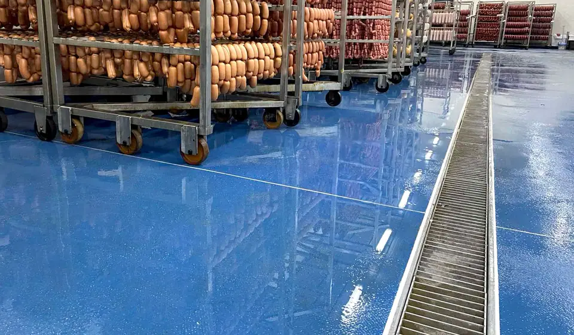
М'ясопереробна галузь
Богодухівський м'ясокомбінат
5 кейсів галузі в розділі «Проєкти»
Усі кейси галузі Розділ у розробці (Розділ у розробці) Запитати про кейс у Viber
Будуємо і реконструюємо підлоги діючих виробництв: рішення, придатні до повного навантаження через 4 години.
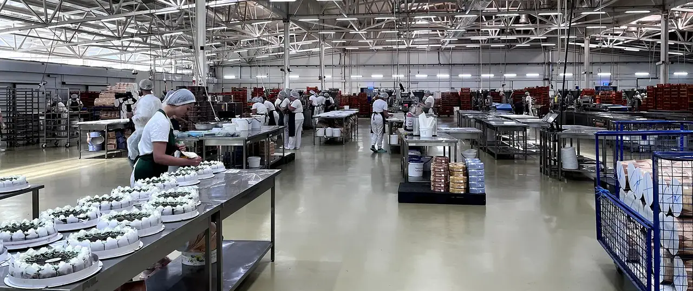
Дев'ять галузей, для яких ми вже будували підлоги. У кожній — об'єкт, де підлога працює.

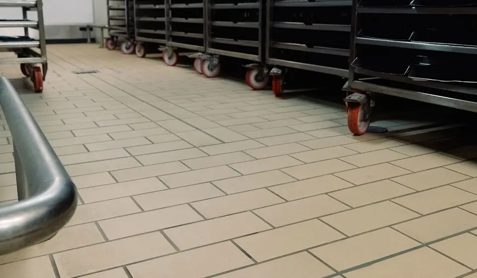
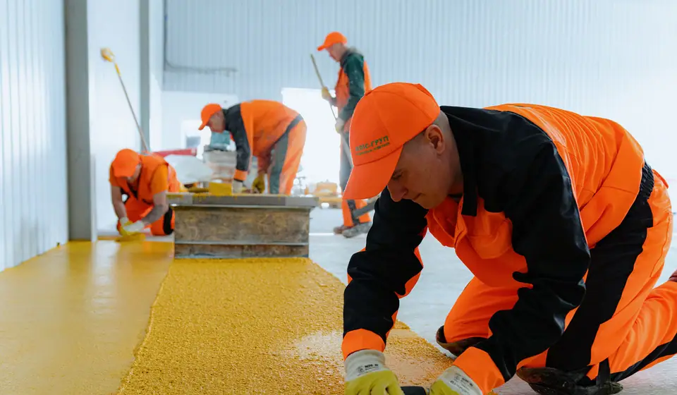
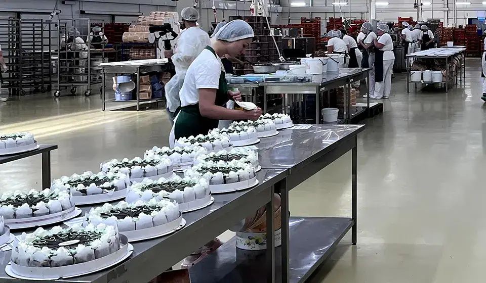
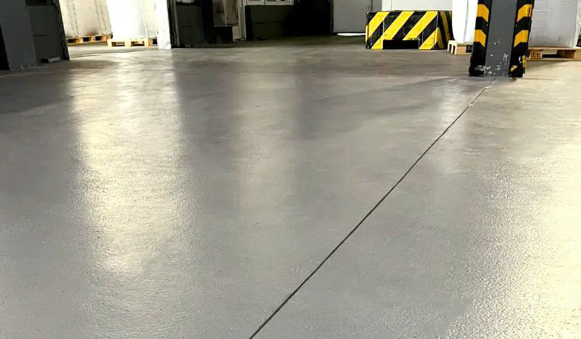
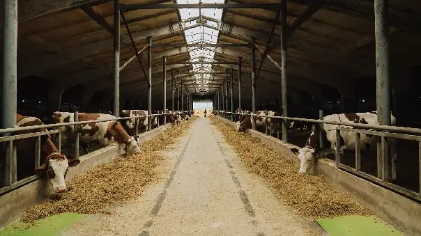
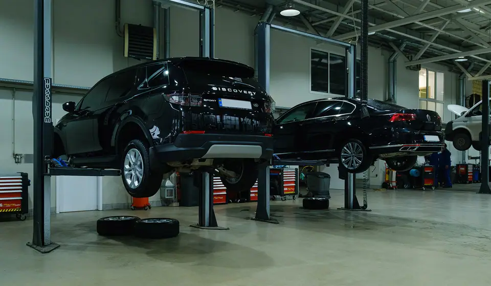
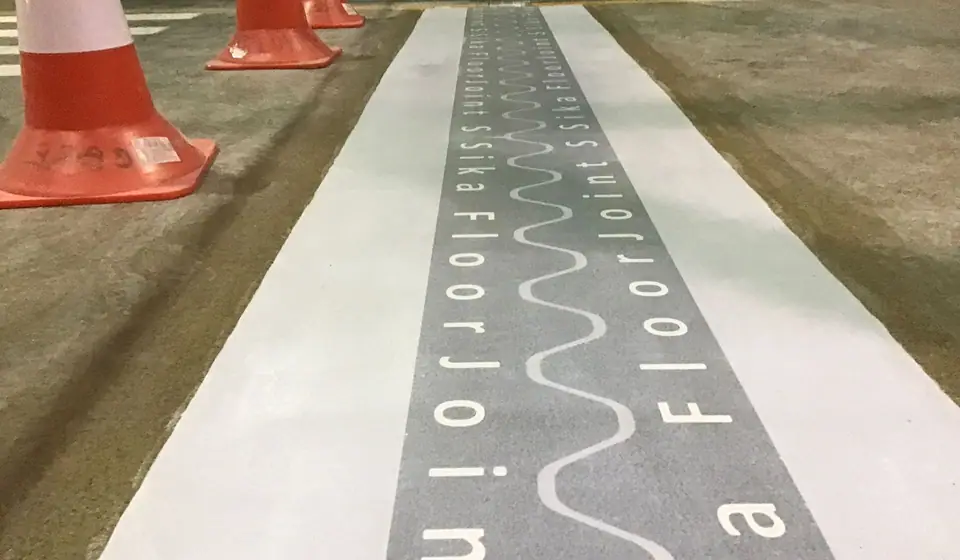
Площа — головне в кожному кейсі: так видно масштаб робіт.
7 500м²
Солодощі та кондитерські вироби
Детальніше про об'єкт (Розділ у розробці) Запитати про кейс у Viber
5 320м²
Олійно-жирова промисловість
Детальніше про об'єкт (Розділ у розробці) Запитати про кейс у Viber
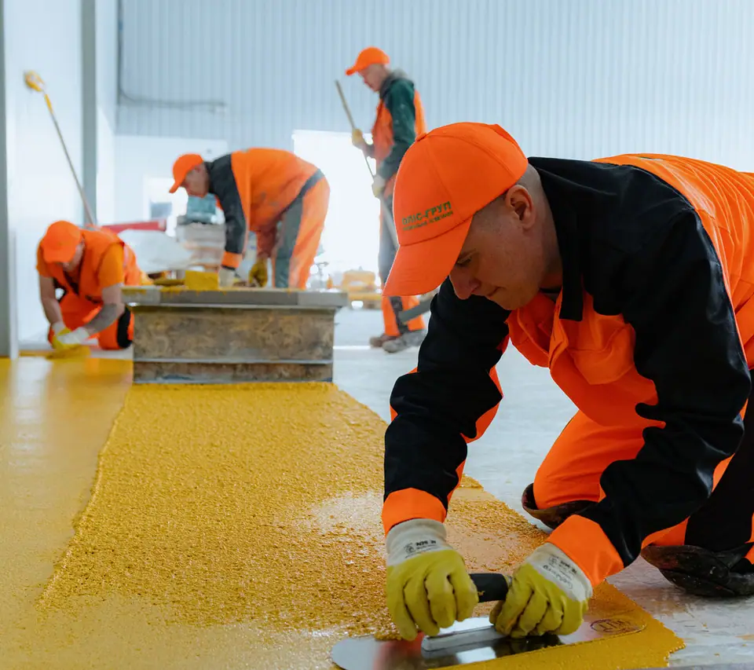
3 985м²
Солодощі та кондитерські вироби
Детальніше про об'єкт (Розділ у розробці) Запитати про кейс у Viber
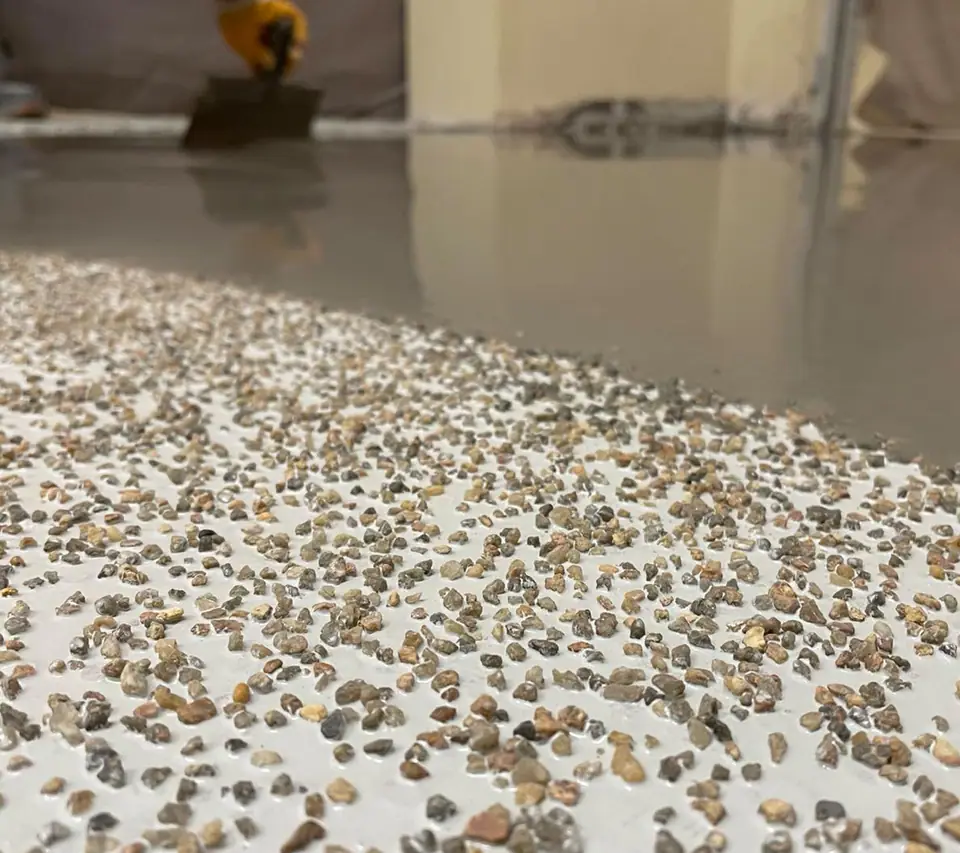
Усі проєкти (Розділ у розробці)
Роботи без зупинки виробництва. Повне навантаження через 4 години.
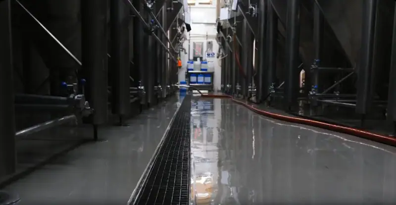
Як ми працюємо: процес і гарантія (Розділ у розробці)
15 послуг у чотирьох групах: покриття, гігієна, захист, інженерія.
Усі послуги (Розділ у розробці)
Текст угоди (Розділ у розробці)
70%
замовників співпрацюють з нами повторно
Постачальники: Sika (зокрема PurCem і Permacor), Ucrete, BASF, ACO, BLÜCHER, Höganäs, Limatec, ЗАХНА, Schönox.
ПГО «Ласка», КД «Вацак», пивоварня «Правда», «Дубномолоко» та інші розповідають про свої підлоги.
Відеовідгуки на YouTube (відкриється в новій вкладці)Працюємо по всій країні. Офіс — у Кропивницькому.
Ціну рахуємо під об'єкт, онлайн-калькулятора немає. Надішліть ці дані, і ми зробимо попередній розрахунок. Мінімальне замовлення — від 300 м².
Технічне завдання онлайн (Розділ у розробці)
Лист відкриється з готовим шаблоном: заповніть пункти і додайте фото основи.
Пн–Пт 8:30–17:30, Сб–Нд вихідний
Відкрити на карті (відкриється в новій вкладці)